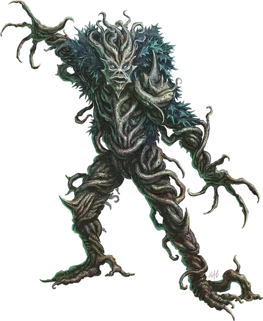

Бритвеннолозая зараза
Razorvine Blight
Среднее Растение, нейтрально-злое

Класс Доспеха 12
Хиты 27 (5к8 + 5)
Скорость 30 футов, лазая 30 футов
| мод | спас | ||
|---|---|---|---|
| СИЛ | 10 | +0 | +0 |
| ЛОВ | 15 | +2 | +2 |
| ТЕЛ | 13 | +1 | +1 |
| мод | спас | ||
|---|---|---|---|
| ИНТ | 5 | −3 | −3 |
| МДР | 10 | +0 | +0 |
| ХАР | 3 | −4 | −4 |
Навыки Скрытность +4
Иммунитет к состояниям глухота, ослепление
Чувства слепое зрение 60 футов (не видит за пределами этого радиуса), пассивное Восприятие 10
Языки понимает Общий, но не говорит
Опасность 1 (200 опыта)
Бонус мастерства +2
Особенности
Обманчивая внешность. Если зараза неподвижна в начале боя, она имеет преимущество в броске инициативы. Более того, если существо не наблюдало за движением или действием заразы, это существо должно преуспеть в проверке Интеллекта (Расследование) Сл 18, чтобы определить, что зараза одушевлена.
Паучье лазание. Зараза может лазать по сложным поверхностям, включая потолки, без совершения проверок характеристик.
Действия
Мультиатака. Зараза совершает две атаки Когтями.
Когти. . Рукопашная атака оружием: +4 к попаданию (с преимуществом, если у цели отсутствует часть хитов), досягаемость 10 футов, одна цель. Попадание: 5 (1к6 + 2) рубящего урона.
Лозы, высасывающие жизнь (перезарядка 6). Змеящиеся виноградные лозы вырываются из заразы. Каждое существо в пределах 10 футов от неё должно совершить спасбросок Ловкости Сл 12, получая 9 (2к8) рубящего урона при провале или половину этого урона при успехе. Если хотя бы одно из существ, провалившее спасбросок, не является Конструктом или Нежитью, зараза восстанавливает себе 9 хитов.
Описание
“Люди ненавидят бритвенные лозы, но реальную проблему они создают только в том случае, если у вас есть кожа”.
– Морте
Путешественники по Сигилу и Нижним планам стараются избегать бритвенных лоз, ползучего растения, названного так из-за его колючих стеблей и режущих листьев. В то время как бритвенные лозы обычно является простой помехой окружающей среды или сдерживающим фактором, бритвенные лозы, поглощающие кровь случайного вампира, может вызвать кошмар, известный как бритвеннолозая зараза.
Бритвеннолозые заразы устраивают засады на хорошо протоптанных тропах, замирая на месте, притворяясь обычными бритвенными лозами. Когда невнимательные путешественники проходят мимо, казалось бы, неодушевленного растения, зараза нападает, обнажая свою искажёную, похожую на человеческую форму, набрасываясь бритвенно острыми лозами, чтобы утолить свою жажду крови.
В то время как бритвеннолозые заразы обычно опасны, в Сигиле они иногда имитируют поведение других жителей города — к лучшему это или к худшему. По крайней мере, одна зараза, известная как Патч, распространяющая свои копии по всему городу, создавая шпионскую сеть копий с таинственными целями.